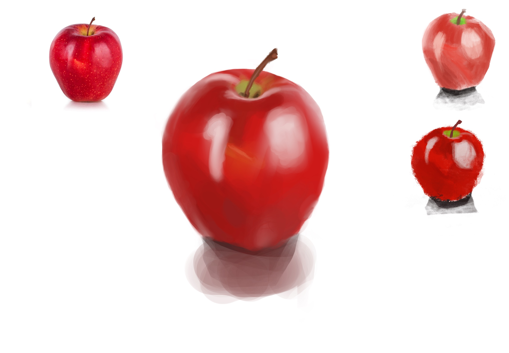
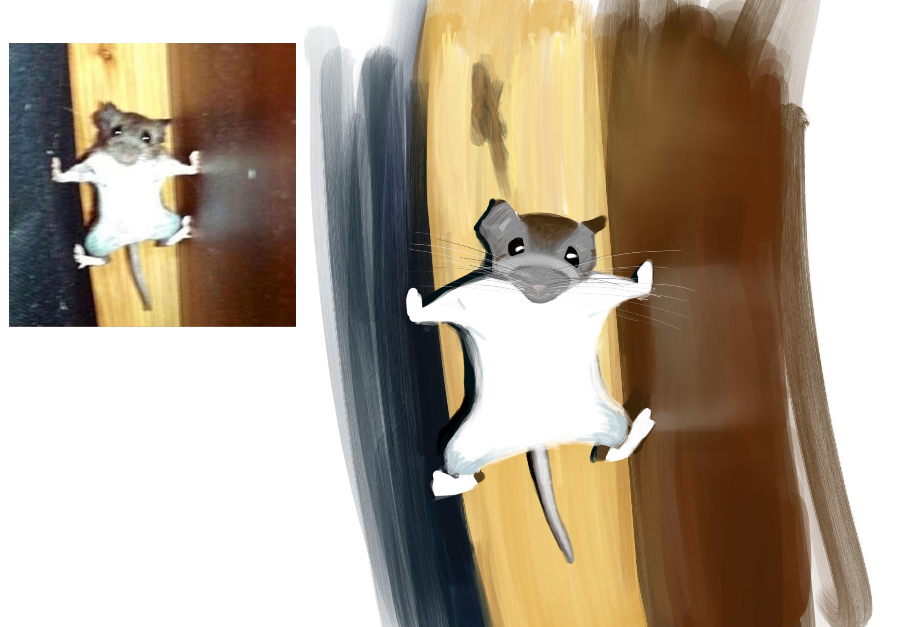
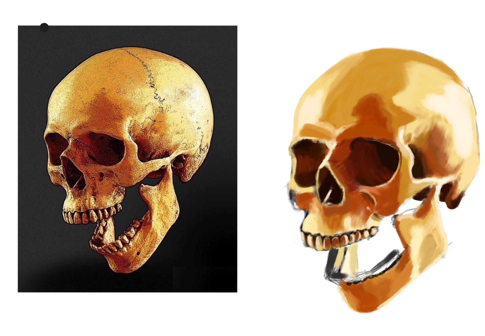
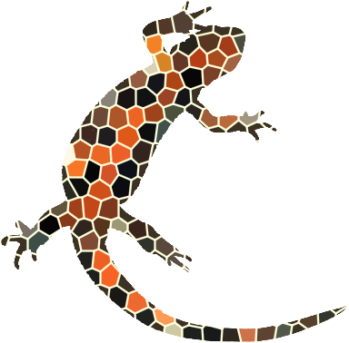

If you want to know more about me, head on over here!
Brief introduction:
My name is Jack, and I love...
Art: Below you'll find some color studies of mine
Virtual Reality: One of my favorite VR games is Lone Echo
Writing and Literature: My mom loves writing poetry, and I often ask for her advice on mine
The aforementioned color studies:



Stuff I didn't change:
What are block elements good for?
The next element after this is a ul, or unordered list. It makes a bulleted list.
headings
paragraphs
lists
tables
images
How about we look at an ol element, or ordered list? The code looks very similar to the unordered list.
You have to see the difference by viewing in a web browser.
morning
noon
afternoon
evening
night

a stylized image of a firebelly newt that Dr. B made as a web logo on newtfire.org